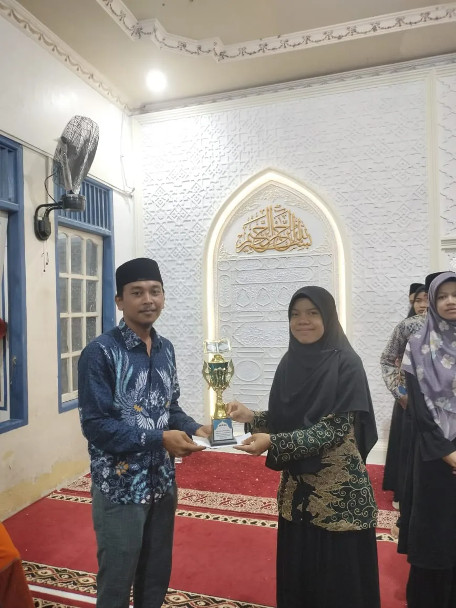
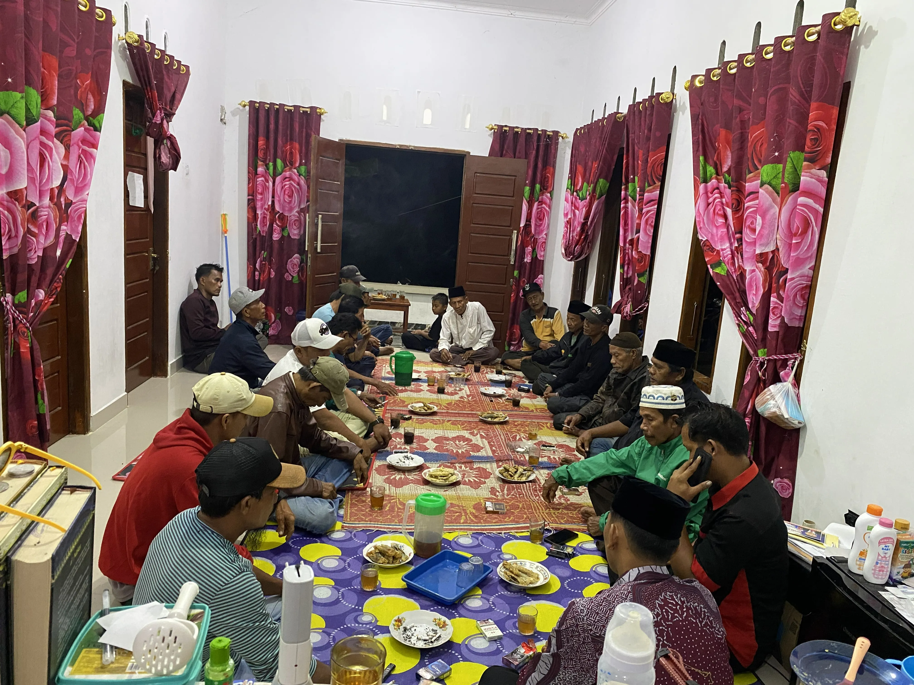
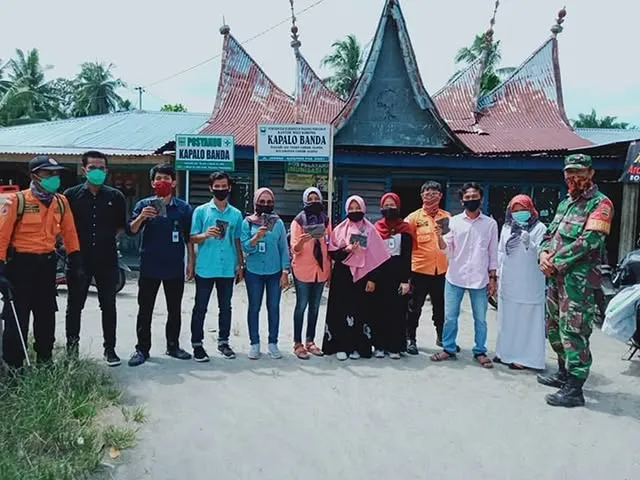
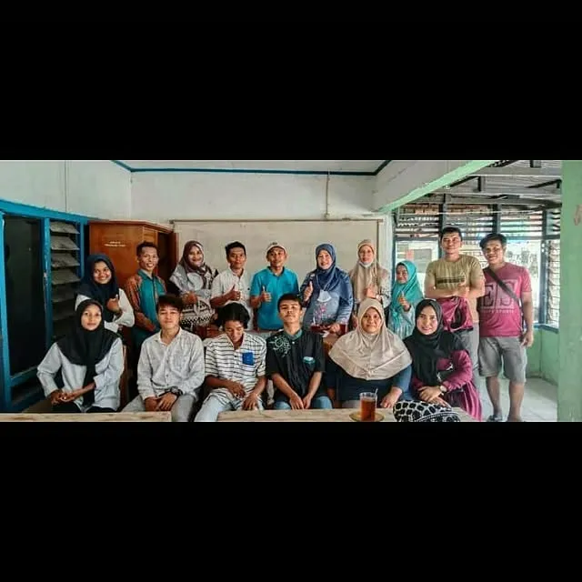
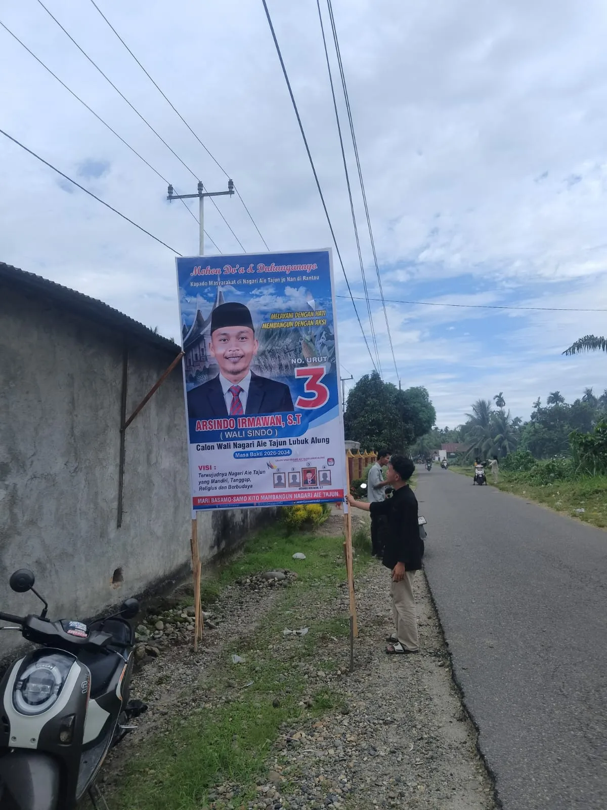
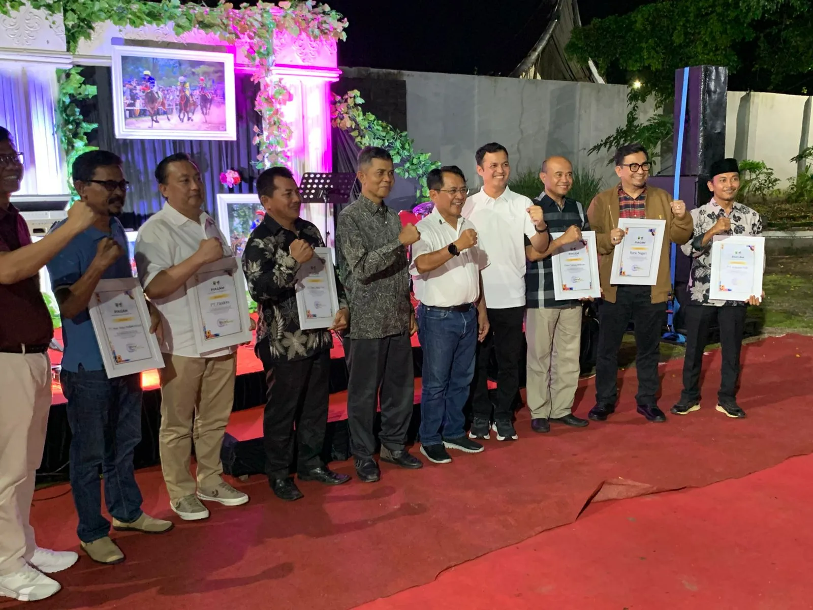
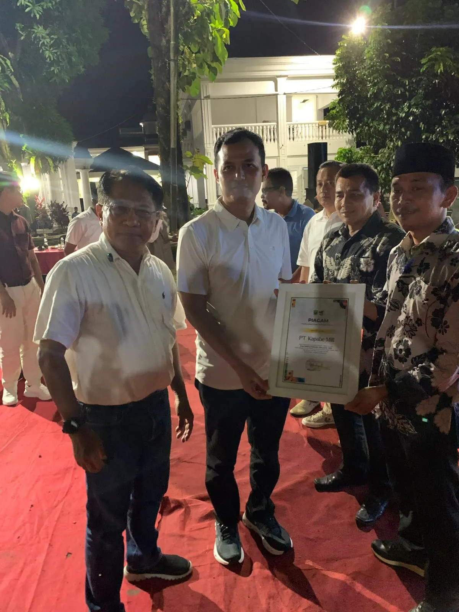
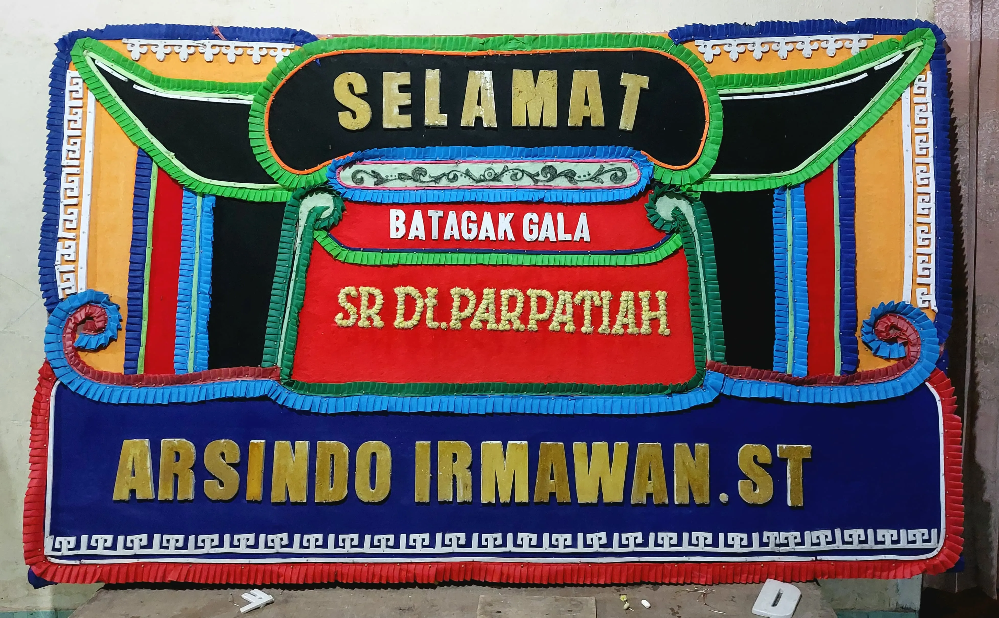
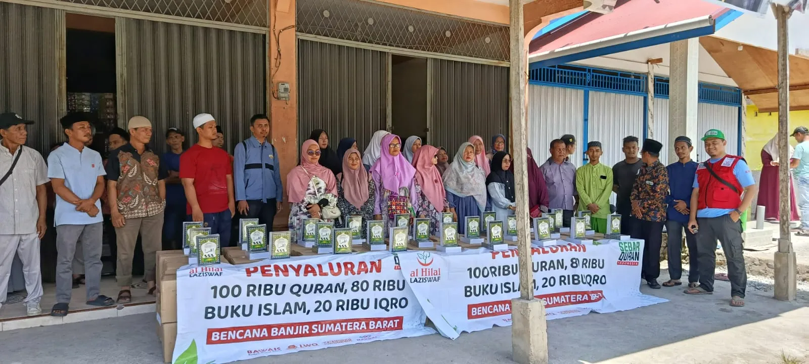

1
Pemerintahan Profesional & Transparan
Mewujudkan nagari yang tanggap melalui tata kelola pelayanan pemerintahan yang profesional dan transparan.
Calon Wali Nagari Aie Tajun Lubuk Alung
Periode 2026 — 2034
"Melayani dengan Hati,
Membangun dengan Aksi"
Wali Korong berpengalaman 8+ tahun, siap melayani Nagari Aie Tajun Lubuk Alung dengan dedikasi dan integritas.

Membuka Sekolah Paket A, B, C pada tahun 2019 di Kantor Wali Korong Kapalo Banda bekerja sama dengan PKBM Delima Bandara.
Membentuk relawan COVID-19 pada tahun 2019 dengan bekerja sama dengan pihak rantau untuk pengadaan masker dan vitamin.
Membentuk Sanggar Seni Tonggak Macu pada tahun 2021 untuk kesenian daerah bagi anak remaja Korong Kapalo Banda.
Membuka lapangan bulu tangkis dan lapangan takraw dengan swadaya ranah rantau.
Membentuk Remaja Surau Fauqal Anhar dan Majlis Taklim pada tahun 2025.
Edukasi bahaya narkoba bersama narasumber dari Polres Padang Pariaman.
Berkolaborasi aktif dengan Pemerintah Daerah Kabupaten dan Anggota Dewan untuk pembangunan fisik.
"Terwujudnya Nagari Aie Tajun Lubuk Alung yang Mandiri, Tanggap, Religius, dan Berbudaya"
Mewujudkan nagari yang tanggap melalui tata kelola pelayanan pemerintahan yang profesional dan transparan.
Mewujudkan kemandirian ekonomi nagari berbasis potensi lokal.
Membangun masyarakat nagari yang religius dan berakhlak mulia.
Melestarikan dan mengembangkan adat serta budaya sebagai jati diri nagari.
Mendorong pembangunan nagari yang partisipatif melalui kolaborasi Ranah dan Rantau.
6 pilar program kerja jangka pendek dan jangka panjang untuk kemajuan Nagari Aie Tajun Lubuk Alung.
Bukti nyata dedikasi dan kerja keras Arsindo Irmawan bersama masyarakat Nagari Aie Tajun Lubuk Alung.







